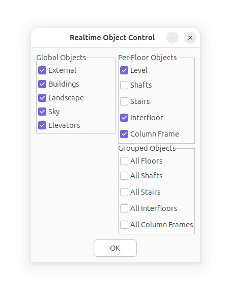

Realtime Object Control
The Realtime Object Control window, is a relatively simple object
controller, that enables or disables objects.
Keep in mind that certain mesh objects (such as Level) might not
turn on or off properly, due to Skyscraper's mesh optimizer being
in effect.

In Skyscraper, the External mesh is designed to surround
your building, and is shown as the building's facade
during visits to other buildings elsewhere in the simulator.
The Buildings mesh is no longer recommended to use, but is
still supported. It was originally designed to show other
buildings as empty facades in the simulator, but this was replaced
with the Engine Contexts (now Virtual Manager) feature.
The Landscape mesh is where any vegetation, roads, and
other misc features should go.
Sky is a system object, currently is the Caelum sky system.
The Elevators checkbox turns on or off all elevators in
the current simulator instance.
The Per-Floor Objects are objects which are created on a per-floor
basis, such as floors themselves, columns, shafts, and stairs.
The Interfloor mesh is a space between floors/levels, for
the building structure.
ColumnFrame is a mesh that holds building columns.
Each mesh can be enabled or disabled separately in the simulator.